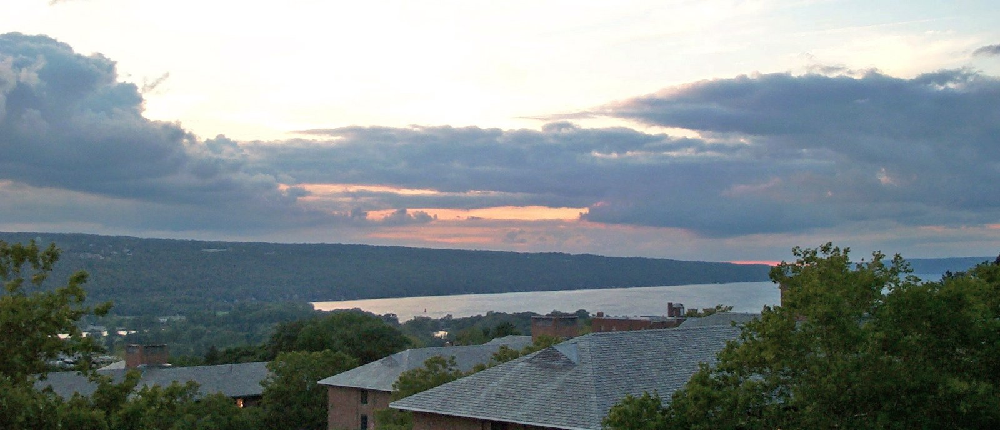

Audience
Second Homes and Lake Houses: Wildlife Protection for Empty Houses
A vacant house is the best den on the lake: warm, quiet and unvisited for months. Finger Lakes cottages, Saratoga lake houses and Adirondack-edge places all learn this the same way, at spring opening. This page is the vacant-home playbook: seal before winter, check through it, open carefully.
Request an inspection


The caretaker arrangement that works
The second homes that stay clean share one feature: a named human with a short written list. Not a favour-based glance, a list. Cap still on the chimney. No new digging at the deck. Hatch area smelling clean. No droppings on the porch boards under the gable. A photograph of the roofline from the same spot each visit, so change shows itself. Visits land monthly through winter and once after any big storm, because storms open more entries than animals do. The caretaker sends the photographs the same day, and anything flagged gets an operator visit while the problem is one animal with one hole. Owners who formalise this, paid, written and dated, stop opening their houses to a season of damage. Owners who rely on a neighbour's goodwill usually discover the arrangement ended two winters ago.
Why vacant homes get chosen
Animals read a vacant house in one visit: no lights, no voices, no dog, snow unshovelled at the door. Through the October to March entry push, raccoons take the chimney and attic, squirrels and flying squirrels take the roofline, mice take everything, and bats take the gables they used last summer. A lake house adds its own invitations: a deck over water, a boat house joined to the main structure, firewood stacked against the wall for the one winter weekend, and a roofline nobody photographs from one year to the next.
The damage compounds quietly. One winter of mice is a smell and some droppings. One winter of a raccoon family in an unheated attic is a latrine, ruined insulation and chewed wiring found in May, priced as restoration rather than removal. The economics of second homes flip the usual advice: prevention and checks are not the careful option, they are the cheap one, because discovery is the costliest stage of every vacant-home job.
- Unheated attic and chimney: raccoon and bat territory
- Decks over water: skunk and groundhog dens below
- Firewood against the wall: a ladder and a shelter in one
- No occupants: no noise reports until spring
The spring opening checklist
Open the house like an inspector, not like a holiday. Before the first night, walk the outside: roofline from the ground, chimney cap in place, screens whole, deck skirt unbroken, fresh digging anywhere. Sniff at the door as it opens; a season of occupation has a smell and the first breath tells the truth. From the attic hatch, torch-check for droppings, latrines and new daylight at the edges before anyone sleeps under that ceiling. Check for chewed wiring signs, flickering circuits, before loading the house with people and appliances.
Anything found gets photographed and dated, because a second home's file is its memory: the operator, the insurer and the next spring all read it. Then book the work in the right order, removal, exclusion, cleanup, and put the pre-winter sealing date in the diary before you leave. Owners who run this checklist yearly usually run it on a clean house, which is precisely the point of running it.
- Outside walk: cap, screens, skirt, digging
- First-breath smell check at the door
- Attic hatch check before the first night
- Circuits checked for wiring damage signs
Why timing and documentation matter more for you
For this audience the animal is only half the problem. The other half is timing, access and paperwork: who can let an operator in, who approves the spend, who keeps the photographs, and who answers questions later from a tenant, guest, buyer or insurer. A short written record at each visit solves most of that. Photograph entry points before and after sealing, keep the invoice and the warranty terms together, and note dates of every visit. That file is worth as much as the repair itself when a dispute or a claim appears months later.
Prevention beats repeat callouts
One removal pays for one animal. A full exclusion pass over the roofline, vents, chimney and deck edges pays for every season after it. For properties that sit empty, change occupants or host guests, a scheduled check each autumn, before the October to March attic-entry push, catches lifted flashing, chewed vent covers and new gaps while they are still cheap to fix. Ask any operator you use about a written pre-winter check. It is the single habit that separates properties with one wildlife visit from properties with one every year.
The vacant-home year
| When | Task | Why |
|---|---|---|
| September | Full sealing pass and chimney cap check | Beat the October entry push while the house is still visited |
| Closing day | Food out, bins washed, firewood moved off the wall | Remove the welcome mat for the empty months |
| Mid-winter | One check visit or a neighbour/caretaker look | Catch a breach while it is one animal, not a family |
| Spring opening | Checklist walk, hatch check, photographs | Find winter occupation before the first night |
| Summer | Book repairs in process order | Daylight and lawful bat windows are on your side |
Frequently asked questions about second-home protection
How do animals get into a vacant house over winter?
Through the same gaps as an occupied house, with more time and no disturbance: chimney without a sound cap, lifted flashing after autumn storms, chewed vent screens, deck skirts and the joins where additions meet the original structure. Ice works at weaknesses all winter. The sealing pass in September is timed to close those points while the house is still visited, because a gap found in May has usually been a door since November. An inspection in one of the ten upstate towns we cover confirms the details before any work or price is agreed in writing.
What is the spring opening wildlife checklist?
Walk the outside for cap, screens, skirt and digging. Smell the house as the door opens. Check the attic from the hatch for droppings, latrines and new daylight before anyone sleeps there. Test circuits for flicker or trips that suggest chewed wiring. Photograph and date everything found. Then book work in process order. The full checklist sits on this page, and running it takes under an hour on a clean house. If you are unsure, start with an inspection and written findings, then decide on the next step with clear information in hand.
Can I get inspection reports sent to me remotely?
That is the right arrangement for a distant owner and the one to agree with an operator or caretaker in advance: photographs of entry points and attic findings, a written note of what was checked, and the quote for any work, all sent to you for approval before spending. This service's inspection model is built on photographs and written findings, which travel well. Keep the reports year by year; the file is the house's memory and its insurance evidence in one. That approach keeps the work humane, avoids sealing an animal inside, and gives you a record of exactly what was done.
Bats used our lake house attic last summer. What should we do?
Plan the exclusion for the lawful window, mid-August to September or April, and leave the colony alone outside it, especially through the maternity blackout. A summer colony in a house used on weekends is usually a sealing job plus a guano check, priced in the bat exclusion range of $800-$2,500 with cleanup quoted after inspection. Fit the work to a closed period if you can, so the dusk checks happen without guests arriving mid-job. An inspection in one of the ten upstate towns we cover confirms the details before any work or price is agreed in writing.
Mice wrecked our vacant home. How bad can mouse damage get?
Worse than their size suggests, given five unobserved months: droppings and urine through drawers and insulation, stored soft goods nested in, wiring gnawed along fixed runs and a smell that greets you at the door in May. The fix is removal of contaminated material by zone, small-gap sealing to the quarter-inch standard or finer at pipe entries, and food storage moved into sealed hard containers. The winter check visit exists to catch mice at week two, not month five. If you are unsure, start with an inspection and written findings, then decide on the next step with clear information in hand.
When should a second home be sealed for winter?
September, while visits are still regular and ladder weather holds, and in any case before the October to March entry push peaks. The pass covers the chimney cap, vents, soffits, foundation entries and deck skirt, with photographs filed. Bat-related sealing follows its own calendar where a colony exists. If September is missed, a closing-day pass in October still beats spring discovery by the full price of a winter's occupation. That approach keeps the work humane, avoids sealing an animal inside, and gives you a record of exactly what was done.
Should I keep heating on in a vacant house to deter animals?
Heat is not a deterrent; a warm attic is the prize animals are seeking. Heating settings in a vacant house should follow your plumber's freeze advice for the pipes, not a wildlife theory. What deters is the sealed structure plus signs of life: a caretaker's visits, a cleared path, a light on a timer. Spend the money on the September sealing pass rather than on warming an empty house for its tenants. An inspection in one of the ten upstate towns we cover confirms the details before any work or price is agreed in writing.
Who checks a second home for wildlife in winter?
Three workable models: a neighbour or caretaker on a simple written checklist, an operator's scheduled winter check agreed in autumn, or your own mid-winter visit if distance allows. The operator check costs an inspection-level fee and produces photographs and a report, which suits distant owners best. Whichever model you choose, write down who checks, when, and what they look at. Vacant-home damage is usually discovered late because checking was everyone's assumption and nobody's diary entry. If you are unsure, start with an inspection and written findings, then decide on the next step with clear information in hand.
Request an inspection
Tell us the town, the animal or noise involved, and when it started. An operator covering your town will explain the inspection, the likely next steps and the typical ranges before any work is booked.
Placeholder: call-tracking phone number and form endpoint are added before launch. No phone number is shown or invented in this draft.